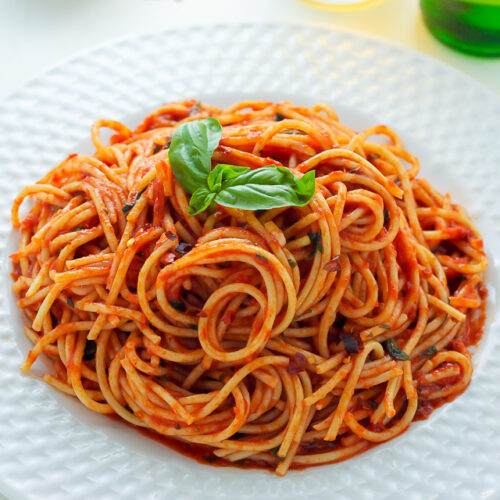

Spaghetti

Description
This is the easiest recipe of them all only requiring two ingredients!
Ingredients
- Store brand spaghetti pasta
- A jar of Prego pasta sauce
Cooking steps
- Boil spaghetti according to brand's instructions
- Heat pasta sauce according to brand's instructions
- Plate and enjoy!
Return to home